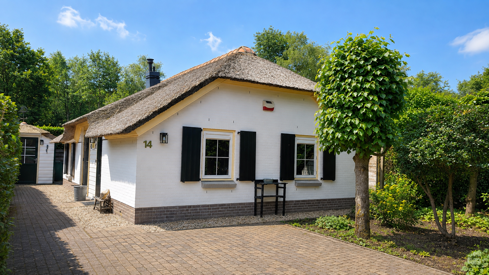
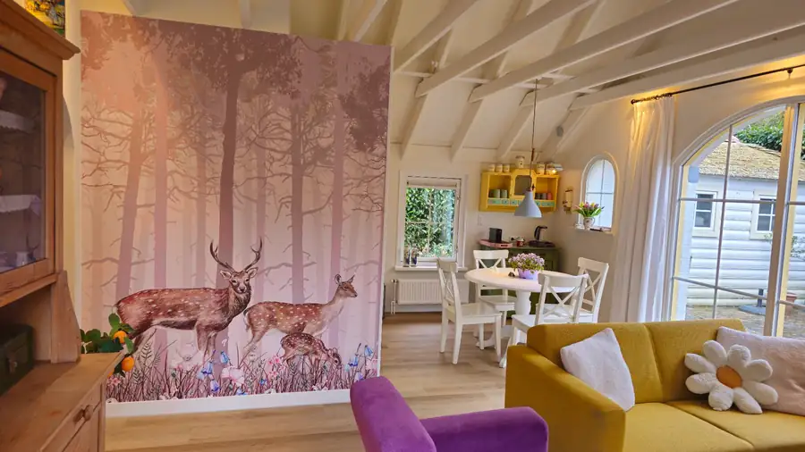
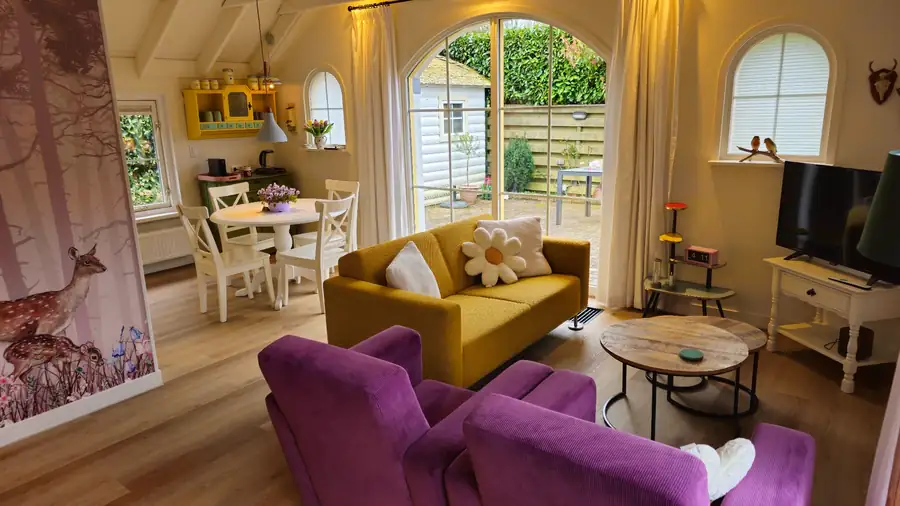
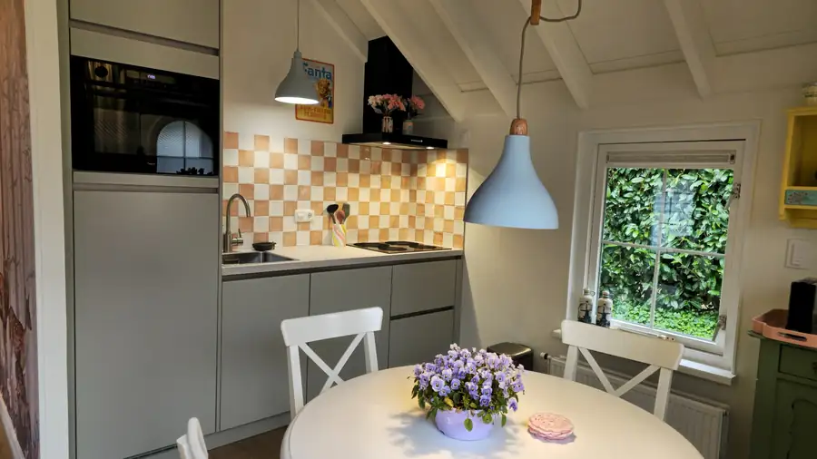
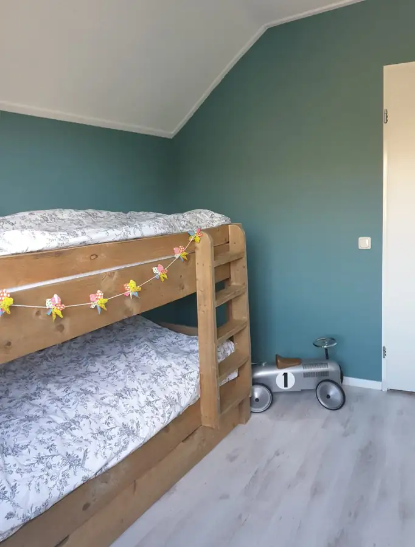
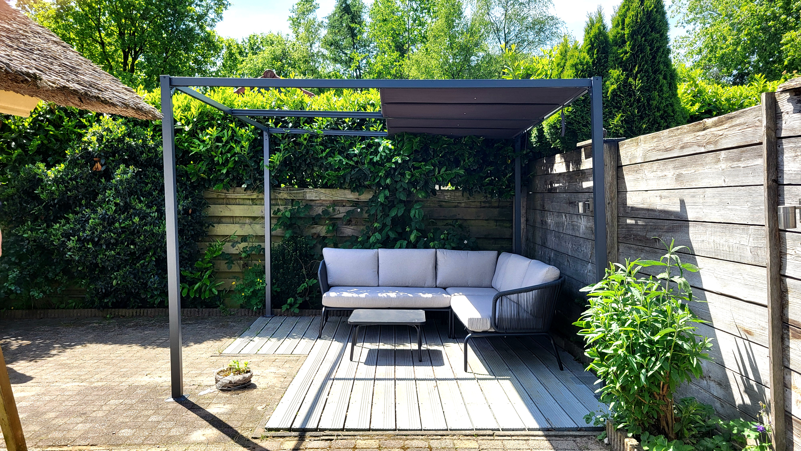
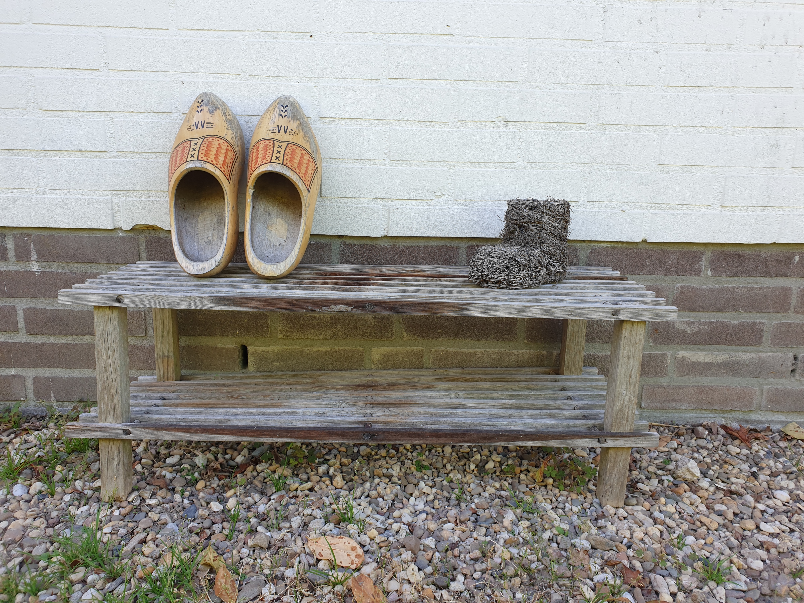

Woonkamer
Lichte, sfeervolle woonkamer met openslaande deuren naar buiten en een kleurrijk interieur.

Putten · Veluwe · 4 personen
Rust, ruimte en het bos om de hoek.
Even helemaal weg
Aan de rand van Putten ligt ons vrijstaande vakantiehuis: een plek om wakker te worden met vogels, lange wandelingen te maken en daarna thuis te komen in een kleurrijk en comfortabel interieur.
Het huis is geschikt voor maximaal vier gasten en heeft twee slaapkamers, een complete keuken, wifi, wasmachine, een eigen terras en een schuur voor fietsen.

Alles wat je nodig hebt
Lichte, sfeervolle woonkamer met openslaande deuren naar buiten en een kleurrijk interieur.
Complete keuken met vaatwasser, Nespresso, oven en alles om zelf te koken.
Comfortabele slaapkamer met een tweepersoonsbed en een rustige sfeer.
Een gezellige kamer met stapelbed, geschikt voor kinderen én volwassenen.
Ruime badkamer met een aparte douche en een ligbad.
Eigen terras en een beschutte loungeplek midden in het groen.
Binnenkijken





Putten & de Veluwe
Bossen, heide en fijne fietsroutes liggen dichtbij. Putten is een goede uitvalsbasis voor een rustig weekend, een actieve fietsvakantie of een paar dagen met het gezin.
Wat gasten zeggen
Geweldig verblijf in Putten. Aan de rand van het bos, perfect om te gaan wandelen, fietsen en lopen. Verder ook heel veel horeca en activiteiten in de omgeving.
Wij hebben een fijn verblijf gehad in het huisje. We werden hartelijk ontvangen door Sandra, het huisje was brandschoon en van alle gemakken voorzien.
Heerlijke paar dagen gehad met ons gezin waaronder 2 jongens van 2 en 4 jaar. Het huisje is heel knus, van alles voorzien en heeft een fijne buitenruimte.
Zin in de Veluwe?
Binnenkort tonen we hier de actuele beschikbaarheid, automatisch gesynchroniseerd met Airbnb. Tot die tijd kun je de kalender en boekingsmogelijkheden op Airbnb bekijken.
De Airbnb-kalender is op dit moment de actuele bron voor vrije data.
Bekijk op AirbnbDirect boeken via huisjebijhetbos.nl voegen we in een volgende stap toe.